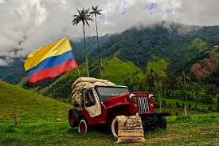
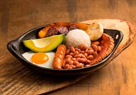

Colombia es un país ubicado en América del Sur, conocido por su gran diversidad de culturas, paisajes naturales y riqueza en biodiversidad. Su capital es Bogotá y se caracteriza por tener montañas, selvas, ríos y playas en el mar Caribe y el océano Pacífico. Es reconocido por su café, su música y la amabilidad de su gente

La cultura de Colombia es muy diversa gracias a la mezcla de influencias indígenas, africanas y españolas. Esta combinación se refleja en la música, el arte, la gastronomía y la forma de vida de las personas. Ritmos como la Cumbia y el Vallenato son parte importante de la identidad cultural del país, así como la amabilidad y hospitalidad de su gente, que hacen que los visitantes se sientan bienvenidos en cualquier región.
Las tradiciones de Colombia reflejan la alegría, la diversidad cultural y el fuerte sentido de comunidad de su gente. A lo largo del año se celebran festivales llenos de música, bailes y coloridos desfiles que muestran la identidad de cada región. Uno de los más representativos es el Carnaval de Barranquilla, considerado uno de los carnavales más grandes del mundo, donde se mezclan danzas tradicionales, disfraces y comparsas que narran historias del folclor colombiano. Otra celebración importante es la Feria de las Flores en Medellín, donde los famosos “silleteros” desfilan con impresionantes arreglos florales, mostrando una tradición que ha pasado de generación en generación. Estas festividades no solo atraen turistas de todo el mundo, sino que también mantienen vivas las raíces culturales del país y fortalecen el orgullo de ser colombiano.
| Plato típico | Región | Ingredientes principales |
|---|---|---|
| Andina | Ajiaco | Sopa tradicional con pollo, papas y mazorca. |
| Caribe | Arroz con coco | Arroz preparado con leche de coco, acompañado con pescado frito. |
| Orinoquía | Mamona | Carne de ternera asada típica de los llanos. |
| Amazónica | Pirarucú | Pescado típico del Amazonas preparado asado o frito. |
